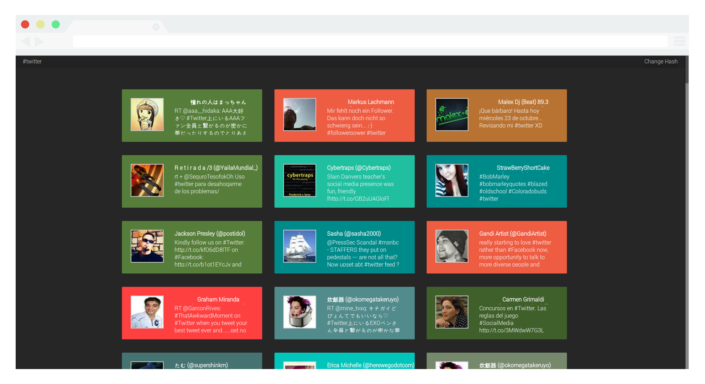
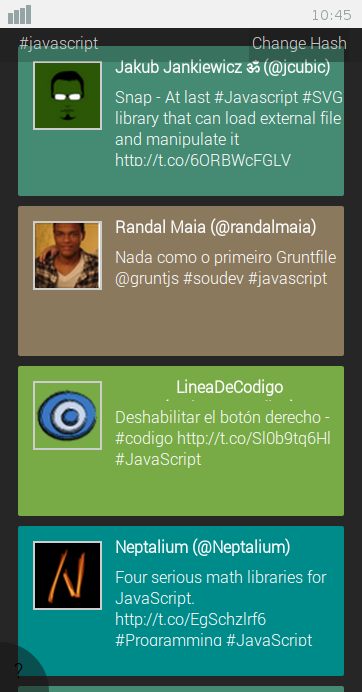
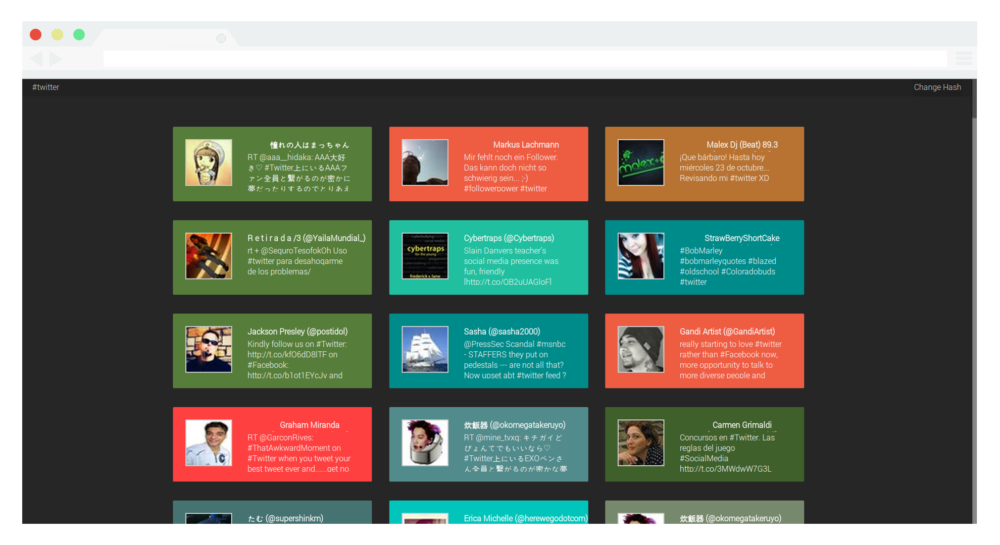
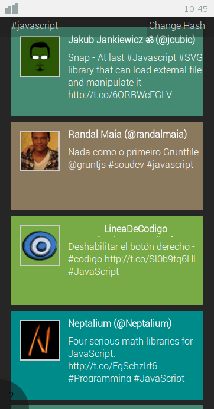

Twitter Bricks
Realtime Streaming Tweet feed written in JavaScript for node.js
github.io

 Setup instructions
github.io
Desktop
Running hash #Twitter
Mobile
Running hash #javascript Setup instructions
Twitter Bricks
Desktop
Running hash #TwitterMobile
Running hash #javascript